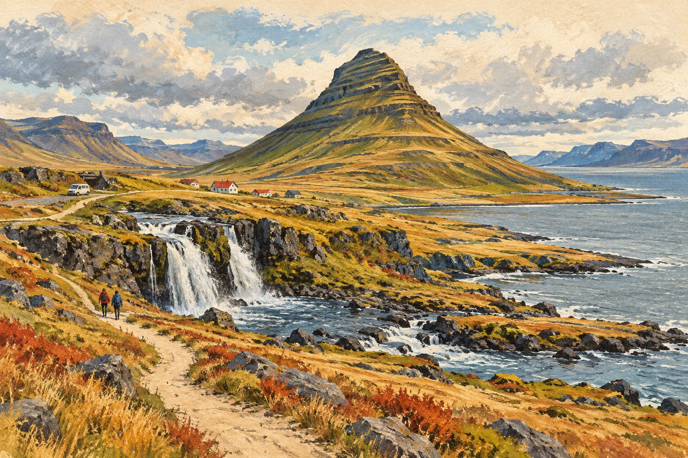

CANADA & USA
加拿大 ＋ 美國
湖岸、街角與海灣。28 個示例日，4 組相對週次。
翻開手帖 →
ICELAND
冰島
半島、南岸與小城。10 個示例日，2 組相對週次。
翻開手帖 →日程皆為可自由調整的公開示例，以 Day 1 與第 1 週等相對索引呈現。景點開放、交通、活動資格與安全資訊，請在出發前向官方查核。
TWO JOURNALS · MANY WAYS TO WANDER
山海與城市的旅行靈感，配上原創風景插畫。
從相對週次與 Day 索引開始，拼出自己的步調。
CANADA & USA
湖岸、街角與海灣。28 個示例日，4 組相對週次。
翻開手帖 →
ICELAND
半島、南岸與小城。10 個示例日，2 組相對週次。
翻開手帖 →日程皆為可自由調整的公開示例，以 Day 1 與第 1 週等相對索引呈現。景點開放、交通、活動資格與安全資訊，請在出發前向官方查核。